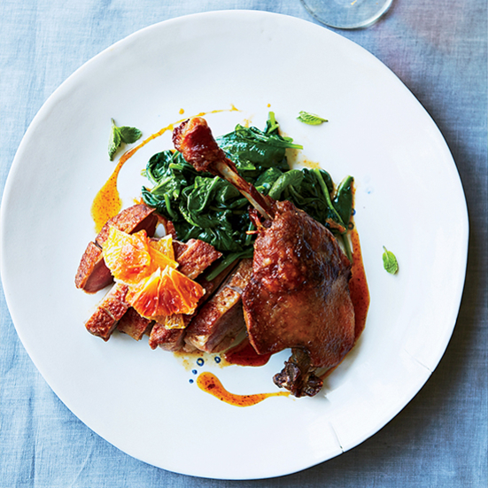

About Us
Welcome to our site! This website is the cumulative effort of our final project, a recipe finder application. We all enjoy cooking and wanted to develop an application that would allow us to cook meals with whatever ingredients we had on hand. Fridge 2 Plate allows you to search recipes with commonly used or provided ingredients and returns recipes with the closest match. We hope you enjoy using our website as much as we enjoyed creating it. Thanks for stopping by and happy cooking!